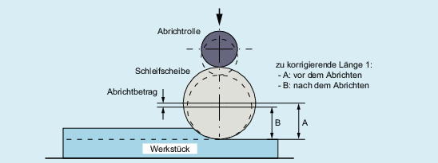

Die Funktion FTOC ermöglicht zur Online-Werkzeugkorrektur die überlagerte Bewegung einer Geometrieachse in Abhängigkeit von einem Bezugswert, z. B. dem Istwert einer beliebigen Achse. Der Korrekturwert wird dabei anhand eines mit FCTDEF definierten Polynoms errechnet (siehe Kapitel "Polynomkoeffizienten, -parameter ($AC_FCT...)"). Der bei der Polynomdefinition angegebene Koeffizient a0 wird auch von FTOC ausgewertet.
Beispiel: Bearbeiten und Abrichten in der Technologie "Schleifen"
Abrichten während der Bearbeitung mit einer Abrichtrolle
Weitere Informationen
Funktionshandbuch Werkzeuge
FTOC(<Poly_Nr>,<Systemvar>,<Verschleiß>[,<Kanal_Nr>,<Spindel_Nr>])
Parameter | Bedeutung |
|---|---|
| Nummer des mit |
| Beliebige Systemvariable vom Typ REAL, die in Synchronaktionen verwendet werden kann. |
| Verschleißparameter (Länge 1, 2 oder 3), in dem der Korrekturwert addiert wird. |
| Zielkanal, in dem die Korrektur wirken soll. Damit ist zeitgleiches Abrichten aus einem parallelen Kanal möglich. Im Zielkanal der Korrektur muss die Online-Korrektur mit Wird keine Kanalnummer programmiert, wirkt die Korrektur im aktiven Kanal. |
| Die Spindelnummer wird programmiert, wenn eine nicht aktive Schleifscheibe abgerichtet werden soll. Voraussetzung: eine der folgenden Funktionen ist aktiv
Wird keine Spindelnummer programmiert, wird das aktive Werkzeug korrigiert. |
Länge einer aktiven Schleifscheibe korrigieren
| Programmcode | Kommentar |
|---|---|
| FCTDEF(1, -1000, 1000, -$AA_IW[V], 1) | |
| ; FTOC:; Polynnom-Nr: 1; Systemvariable: $AA_IW[V] (axialer Istwert der V-Achse); Verschleißparameter: Länge 3; Zielkanal: Kanal 1 | |
| ID=1 DO FTOC(1, $AA_IW[V], 3, 1) | |
| WAITM (1,1,2) | ; Synchronisation mit dem Bearbeitungskanal |
| G1 V-0.05 F0.01 G91 | ; Verfahrbewegung der V-Achse |
| ... | |
| CANCEL(1) | ; Online-Korrektur abwählen |
| ... | |
| Hinweis |
Da keine Häufigkeit und keine Bedingung in der Synchronaktion angegeben ist, wird der Aktionsteil in jedem Interpolatortakt ausgeführt. |